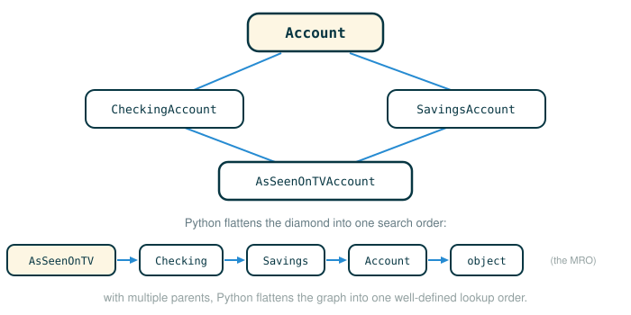

2.5 Multiple Inheritance and the Role of Objects
By the end of this lesson you will be able to do four things. First, define a class that inherits from more than one base class, which Python calls multiple inheritance. Second, predict which inherited method runs when two parent classes both define a method with the same name. Third, read and inspect the method resolution order, the fixed sequence of classes Python searches to find an attribute. Fourth, decide when a problem really wants a class and when a plain function is the cleaner tool.
The single habit underneath all of this is the same one you have been building: when behavior looks ambiguous, slow down and trace the exact path Python takes to find a name. Multiple inheritance does not invent new magic. It only gives Python more places to look, in a specific order.
A Student in Two Clubs
Picture a student who belongs to both the robotics club and the debate club. Each club has its own rules. Robotics meets on Tuesday; debate meets on Thursday. For most rules there is no conflict, because only one club has an opinion about a given thing. The robotics club decides the build-night schedule; the debate club decides tournament sign-ups.
But suppose both clubs publish a rule for the same thing, say a dress code for a shared awards banquet. Now the student needs a tie-breaker: which club's rule wins. The school might decide it with a simple policy, such as "the club you listed first on your registration form takes priority."
Multiple inheritance works the same way. A class can draw behavior from several parent classes. When only one parent defines a name, there is no conflict and that parent supplies it. When two parents define the same name, Python needs a consistent tie-breaker, and the order you list the parents decides who wins.
The Classes We Build On
This document is standalone, so we first rebuild the account classes from the previous lessons. Account is the general base class. CheckingAccount is a specialization that charges for withdrawals and lowers the interest rate.
# (1)
class Account:
"""A bank account that has a non-negative balance."""
interest = 0.02
def __init__(self, account_holder):
self.balance = 0
self.holder = account_holder
def deposit(self, amount):
"""Increase the account balance by amount and return the new balance."""
self.balance = self.balance + amount
return self.balance
def withdraw(self, amount):
"""Decrease the account balance by amount and return the new balance."""
if amount > self.balance:
return 'Insufficient funds'
self.balance = self.balance - amount
return self.balance
class CheckingAccount(Account):
"""A bank account that charges for withdrawals."""
withdraw_charge = 1
interest = 0.01
def withdraw(self, amount):
return Account.withdraw(self, amount + self.withdraw_charge)
CheckingAccount inherits from Account. It keeps deposit and __init__ unchanged, lowers interest, adds a withdraw_charge, and overrides withdraw so that every withdrawal also removes the charge.
A Savings Account
Now define a different specialization. Where a checking account charges you to take money out, a savings account charges you to put money in. The official text writes it like this.
# (2)
class SavingsAccount(Account):
deposit_charge = 2
def deposit(self, amount):
return Account.deposit(self, amount - self.deposit_charge)
The interesting line is the body of deposit. It overrides the inherited deposit by subtracting a fee, then handing the reduced amount to the original Account.deposit. Walk that one line token by token.
return Account.deposit(self, amount - self.deposit_charge)
├─ return ............. hand the result back to the caller
├─ Account.deposit .... the original deposit function, fetched from the Account class
├─ ( .................. begin the arguments
├─ self ............... pass this savings account as the first argument
├─ , .................. separate the arguments
├─ amount ............. the requested deposit amount
├─ - .................. subtraction operator
├─ self.deposit_charge look up the fee on this object: 2
├─ ) .................. end the arguments
└─ evaluates to the new balance after depositing (amount minus the fee)Notice Account.deposit is fetched directly from the class, so self must be passed by hand. The subtraction happens before the call, so the parent's deposit never sees the full amount.
Trace a deposit of 20 by hand to confirm the fee:
amount - self.deposit_charge
20 - 2
18So when you deposit 20, the account balance only rises by 18. The two specializations now split the work cleanly: SavingsAccount changes deposit, while CheckingAccount changes withdraw.
Combining Two Specializations
Here is the question that makes multiple inheritance interesting. What if we want an account that has both behaviors at once: it charges for deposits like a savings account and charges for withdrawals like a checking account? The official text answers with a deliberately over-the-top product.
Before reading the official version, look at a tiny warm-up that shows the syntax with no banking logic at all. A class can simply list two parents and inherit from both.
# (3)
class Robotics:
motto = 'build'
class Debate:
motto = 'argue'
venue = 'auditorium'
class BusyStudent(Robotics, Debate):
pass
Because Robotics is listed first, BusyStudent.motto will be 'build' (both parents define motto, and the first one listed wins). Because only Debate defines venue, BusyStudent.venue is 'auditorium' with no conflict to resolve. That is the entire idea. Now the official account version, which uses the same rule with real method bodies.
# (4)
class AsSeenOnTVAccount(CheckingAccount, SavingsAccount):
def __init__(self, account_holder):
self.holder = account_holder
self.balance = 1 # A free dollar!
The new class lists two base classes, CheckingAccount and SavingsAccount. Its own body defines only __init__, which hands every new customer a free starting balance of 1. Look closely at the header, because the order of the two names inside the parentheses is the whole point.
class AsSeenOnTVAccount(CheckingAccount, SavingsAccount):
├─ class .............. begin a class definition
├─ AsSeenOnTVAccount .. the name of the new class
├─ ( .................. begin the base-class list
├─ CheckingAccount .... first base class; wins ties for shared names
├─ , .................. separate the base classes
├─ SavingsAccount ..... second base class; consulted after the first
├─ ) .................. end the base-class list
└─ defines a class that inherits from both parents, checking-firstBecause CheckingAccount is listed before SavingsAccount, Python gives CheckingAccount priority whenever both inheritance paths could answer the same name. That single ordering decision is what resolves the ambiguity you are about to see.
Using the Multiple-Inheritance Class
Now exercise the new class the way the official text does: create one, read its starting balance, deposit, and withdraw.
# (5)
such_a_deal = AsSeenOnTVAccount("John")
such_a_deal.balance
such_a_deal.deposit(20) # $2 fee from SavingsAccount.deposit
such_a_deal.withdraw(5) # $1 fee from CheckingAccount.withdraw
The interactive session prints:
1
19
13Trace each result by hand. The starting balance is set directly by __init__. The deposit uses the savings-account rule (subtract a 2-unit deposit charge). The withdrawal uses the checking-account rule (add a 1-unit withdrawal charge).
Initial balance:
1
Deposit 20 with a 2-unit deposit charge:
1 + (20 - 2) = 19
Withdraw 5 with a 1-unit withdrawal charge:
19 - (5 + 1) = 13So such_a_deal deposits like a SavingsAccount and withdraws like a CheckingAccount, even though it never defines deposit or withdraw itself. It inherits each from a different parent.
Attribute Lookup When There Is No Conflict
Some names live in only one parent, so there is nothing to resolve. The deposit charge is defined only by SavingsAccount, and the withdrawal charge only by CheckingAccount.
# (6)
such_a_deal.deposit_charge
such_a_deal.withdraw_charge
The session prints:
2
1The attribute deposit_charge is found on SavingsAccount, and withdraw_charge is found on CheckingAccount. Neither lookup involves a tie, so the listing order never matters for these two names. Order only decides cases where more than one parent could answer.
The Inheritance Graph
Drawing the relationships shows why this shape has a special name. AsSeenOnTVAccount has two parents, CheckingAccount and SavingsAccount, and both of those parents inherit from the same grandparent, Account.
AsSeenOnTVAccount
/ \
CheckingAccount SavingsAccount
\ /
\ /
Account
|
objectThe two inheritance paths leave AsSeenOnTVAccount, run through the two middle classes, and rejoin at Account. Because the picture has four corners that meet, this is called a diamond of inheritance. Below Account sits the built-in class object, which every Python class ultimately inherits from. That is why object appears at the end of the lookup order even though we never mention it in the class headers.
The figure below shows how Python flattens this diamond-shaped graph into the single linear method resolution order it searches.

When a name could be answered by more than one class in this graph, Python resolves it with a method resolution order, almost always abbreviated MRO.
For this class, the MRO is:
AsSeenOnTVAccount
CheckingAccount
SavingsAccount
Account
objectPython checks the classes in exactly that order and stops at the first one that defines the attribute it is looking for. The official text describes how that order is built with a short rule: for a simple "diamond" shape like this, Python resolves names from left to right, then upwards. Reading the graph that way reproduces the list exactly. Start at AsSeenOnTVAccount, go left to right across its parents to reach CheckingAccount and then SavingsAccount, and only afterward move upward to the shared Account and finally object.
Tracing the Two Important Lookups
Method resolution is just attribute lookup that walks the MRO. Trace deposit first. Python starts at the object's own class and moves down the order until it finds a class that defines deposit.
such_a_deal.deposit(20)
1. Look in AsSeenOnTVAccount for deposit. Not found.
2. Look in CheckingAccount for deposit. Not found.
3. Look in SavingsAccount for deposit. Found.
4. Call SavingsAccount.deposit with self bound to such_a_deal.Now trace withdraw. The search runs down the same order, but this time the very first parent already defines the method.
such_a_deal.withdraw(5)
1. Look in AsSeenOnTVAccount for withdraw. Not found.
2. Look in CheckingAccount for withdraw. Found.
3. Call CheckingAccount.withdraw with self bound to such_a_deal.The crucial point: the object never splits into pieces, and it never changes class. The same single object is passed as self either way. Multiple inheritance only changes the path Python uses to find the method, not the identity of the object running it.
Asking Python for the Method Resolution Order
You do not have to work the order out by hand. Every class has an mro method that returns its lookup order as a list of class objects. The official text prints just the names with a list comprehension.
# (7)
[c.__name__ for c in AsSeenOnTVAccount.mro()]
The session prints:
['AsSeenOnTVAccount', 'CheckingAccount', 'SavingsAccount', 'Account', 'object']Break the one line of the comprehension into its parts.
[c.__name__ for c in AsSeenOnTVAccount.mro()]
├─ [ ........................ begin a list comprehension
├─ c.__name__ ............... for each class, take its name as a string
├─ for c .................... bind c to each item in turn
├─ in ....................... the source of items follows
├─ AsSeenOnTVAccount.mro() .. the list of classes in resolution order
├─ ] ........................ end the list comprehension
└─ evaluates to ['AsSeenOnTVAccount', 'CheckingAccount', 'SavingsAccount', 'Account', 'object']Each c is one class in the resolution order, and c.__name__ pulls out its name as a string. The result is the same five-class order we traced by hand.
The exact procedure Python uses to build this list is called the C3 method resolution ordering, a recursive algorithm first described for an earlier language and adopted by Python's designers. You do not need the full algorithm here. For now, three facts are enough to reason correctly.
Python uses one consistent class lookup order for every class.
You can inspect that order with ClassName.mro().
The order you list base classes in the class header affects it.When Objects Are the Right Tool
Step back from the mechanics. Why does Python bother with classes, methods, inheritance, and dot expressions at all? The reason is organization. These features let you formalize the idea of an object inside a program, which makes large programs easier to structure.
The deeper goal is a separation of concerns: keeping each part of the program responsible for one job, so the parts do not tangle together. Each object holds and manages one part of the program's state, and each class statement defines the functions that implement one part of the program's logic. Abstraction barriers then enforce the boundaries between those parts, so a change inside one object does not leak out and break code that only uses that object through its interface.
Objects are especially well-suited to programs that model a system made of separate but interacting parts. Good object-shaped situations include:
- different users interacting in a social network
- different characters interacting in a game
- different shapes interacting in a physical simulation
- different bank accounts changing independently
In each case the objects in the program map naturally onto the objects in the system being modeled, and the classes represent their types and the relationships between them. When the problem already comes in the shape of distinct things that each carry state and behavior, objects are the natural fit.
When a Function Is the Better Tool
Classes are not always the best mechanism, and it is a mistake to force every piece of logic into one. A functional abstraction is a more natural metaphor when you are simply describing a relationship between inputs and outputs.
A function is usually the better fit when:
- the computation is a direct relationship from inputs to outputs
- there is no private, changing state to manage
- introducing a new type would add vocabulary without reducing complexity
For example, consider computing the area of a circle from its radius.
area_of_circle(radius)If the program only needs an area from a radius, a plain function is clearer than a class. A class earns its place when the circle must carry state over time, interact with other objects, or share behavior with a family of related shapes. And functions can enforce a separation of concerns just as classes can; you do not need objects to keep distinct responsibilities apart.
Python is a multi-paradigm language: it supports functional abstraction and object-oriented abstraction side by side. That freedom puts a real design decision in your hands. Learning to recognize when a new class genuinely simplifies or modularizes a program, as opposed to when a new function would do the job, is an important software-engineering skill that deserves careful attention.
⚠Common Beginner Traps
The first trap is thinking multiple inheritance copies all parent attributes into the child class. It copies nothing. Python looks attributes up on demand by walking the method resolution order.
The second trap is ignoring base-class order. class C(A, B): and class C(B, A): can resolve a shared name differently, because the first parent listed wins ties.
The third trap is thinking the object changes class while a method is found. such_a_deal stays an AsSeenOnTVAccount even when it runs a method defined on SavingsAccount or CheckingAccount. The MRO chooses the function; it does not retype the object.
The fourth trap is forcing everything into a class. Object-oriented programming is powerful, but a plain function is often the cleaner abstraction for a direct input-output computation.
✓Check Your Understanding
- A fresh
acct = AsSeenOnTVAccount("Mary")runsacct.deposit(10)and thenacct.withdraw(4). What is the final balance, and which class supplies the method for each call? - Which method handles
such_a_deal.deposit(20), and why? - Which method handles
such_a_deal.withdraw(5), and why? - Why does the base-class order
(CheckingAccount, SavingsAccount)matter, and when does it not matter? - What does
[c.__name__ for c in AsSeenOnTVAccount.mro()]return, and what is that list for? - When might a plain function be a better design choice than a class?
Show the answers
- The final balance is
4. The start balance is1;deposit(10)runs throughSavingsAccount.deposit, raising the balance by10 - 2to9;withdraw(4)runs throughCheckingAccount.withdraw, lowering it by4 + 1to4. SavingsAccount.deposithandles it.AsSeenOnTVAccountandCheckingAccountdo not definedeposit, so the search reachesSavingsAccount, which does.CheckingAccount.withdrawhandles it.CheckingAccountis listed first in the header and defineswithdraw, so the search stops there.- The order is the tie-breaker for names that more than one parent defines, like a shared method. It does not matter for names only one parent defines, such as
deposit_chargeandwithdraw_charge. - It returns the class lookup order as a list of names:
['AsSeenOnTVAccount', 'CheckingAccount', 'SavingsAccount', 'Account', 'object']. That order is exactly the sequence Python searches to resolve any attribute on the class. - A function is better when the computation is a direct input-output relationship with no private state to manage and no family of related object types to model.
§Summary
Multiple inheritance lets a class inherit from more than one base class. When two parents define the same name, Python resolves the conflict with a fixed method resolution order, and the order you list the base classes in decides who wins a tie. You can inspect that order with the mro method. Throughout, the object keeps its identity and its class; only the search path changes. More broadly, objects are the right tool for organizing programs built from separate, interacting, stateful parts, while functions remain the better tool for direct input-output computations. Because Python is multi-paradigm, choosing between a class and a function for a given job is a genuine design skill.
▶Step-Through Checkpoint
This program is the lesson's capstone, rebuilding all four classes and exercising one AsSeenOnTVAccount. Watching it draws the environment diagram behind the method resolution order. The single such_a_deal instance on the heap links only to its class AsSeenOnTVAccount, whose parent links run into both CheckingAccount and SavingsAccount, which rejoin at Account and end at object. Along that class chain, deposit resolves down to SavingsAccount, while withdraw stops at CheckingAccount. Each delegates to Account in a nested frame, with self bound to the same object throughout. Before you step through the block below, write down two predictions: how many local frames the creation, the deposit, and the withdrawal each open, and which attribute names end up stored on such_a_deal itself rather than on its classes.
# (8)
class Account:
interest = 0.02
def __init__(self, account_holder):
self.balance = 0
self.holder = account_holder
def deposit(self, amount):
self.balance = self.balance + amount
return self.balance
def withdraw(self, amount):
if amount > self.balance:
return 'Insufficient funds'
self.balance = self.balance - amount
return self.balance
class CheckingAccount(Account):
withdraw_charge = 1
interest = 0.01
def withdraw(self, amount):
return Account.withdraw(self, amount + self.withdraw_charge)
class SavingsAccount(Account):
deposit_charge = 2
def deposit(self, amount):
return Account.deposit(self, amount - self.deposit_charge)
class AsSeenOnTVAccount(CheckingAccount, SavingsAccount):
def __init__(self, account_holder):
self.holder = account_holder
self.balance = 1
such_a_deal = AsSeenOnTVAccount("John")
after_deposit = such_a_deal.deposit(20)
after_withdraw = such_a_deal.withdraw(5)
order = [c.__name__ for c in AsSeenOnTVAccount.mro()]
Step through it one line at a time and check both predictions as the frames open and close. Creation opens a single frame, because the new __init__ replaces Account's, which never runs. The deposit and the withdrawal open two frames apiece: deposit is found through SavingsAccount, withdraw through CheckingAccount, and each delegates to Account for the actual balance change. Through all of it, such_a_deal stays one AsSeenOnTVAccount holding only holder and balance; the charges and interest rates remain on the classes, and its balance moves from 1 to 19 to 13.